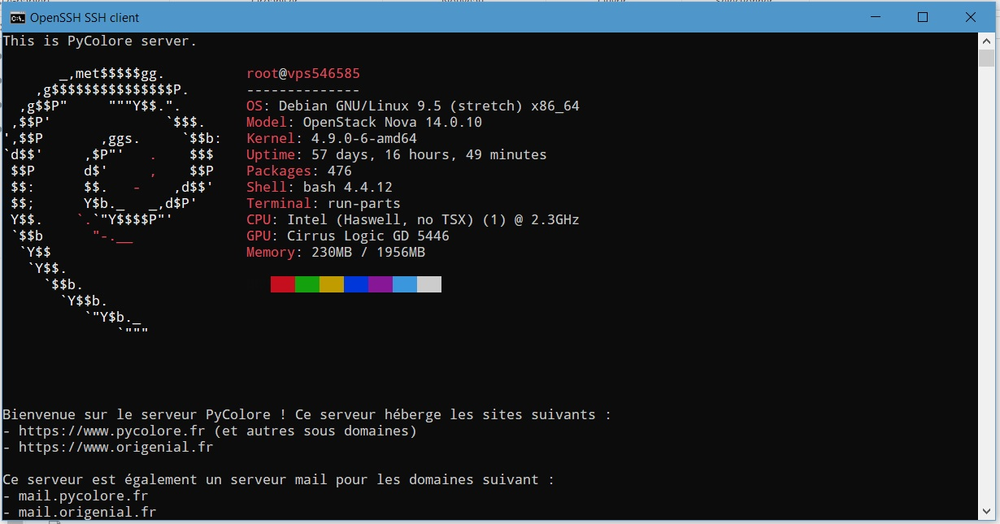

Changer le message de connexion SSH (Debian)
On peut facilement changer le message d'accueil que l'on voit lorsque l'on se connecte en SSH au serveur. Les opérations décrites ci-après ont été effectuées sur un serveur Debian 9 (Stretch). Debian utilise des fichiers à deux emplacements :
- pour un affichage dynamique à
/etc/update-motd.d/: les fichiers de ce dossier sont appelés dans l'ordre alphabétique. Ce sont des scripts bash ; - pour un affichage statique dans le fichier
/etc/motd, un simple fichier texte.
/etc/update-motd.d/
Par défaut il y a dans ce dossier un fichier 10-uname qui comporte une commande indiquant le noyau utilisé et diverses autres informations. On peut tout à fait le modifier ; par exemple sur le serveur PyColore, le fichier est comme ceci :
echo "" # pour un saut de ligne echo "This is PyColore server." echo "" neofetch
/etc/motd
Ce fichier comporte du simple texte qui apparaîtra après les commandes bash. Pour ma part, il indique simplement les domaines hébergés sur le serveur. Cela donne :

Commentaires
Comments powered by Disqus